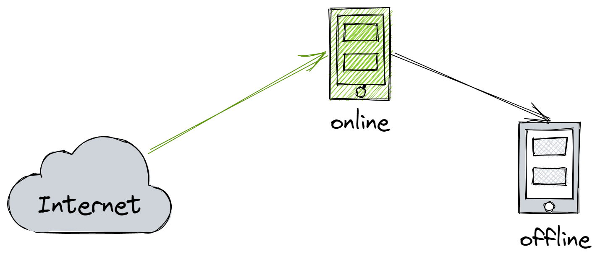
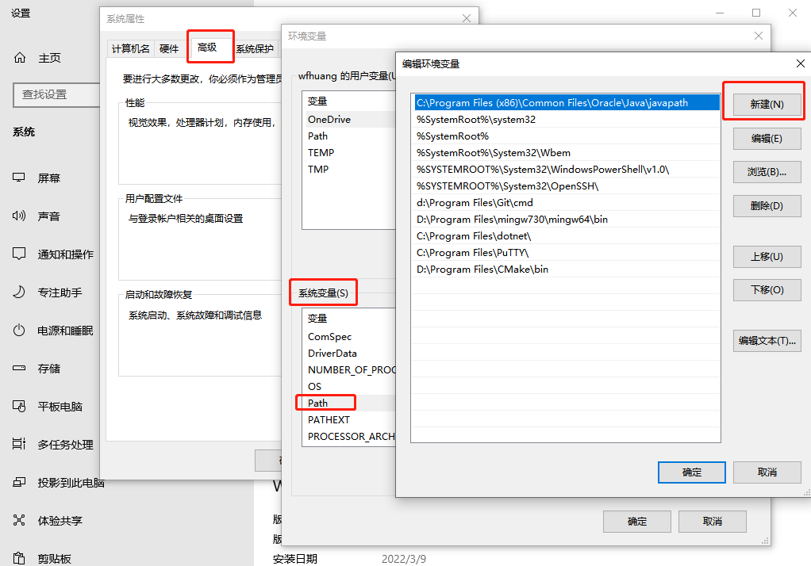
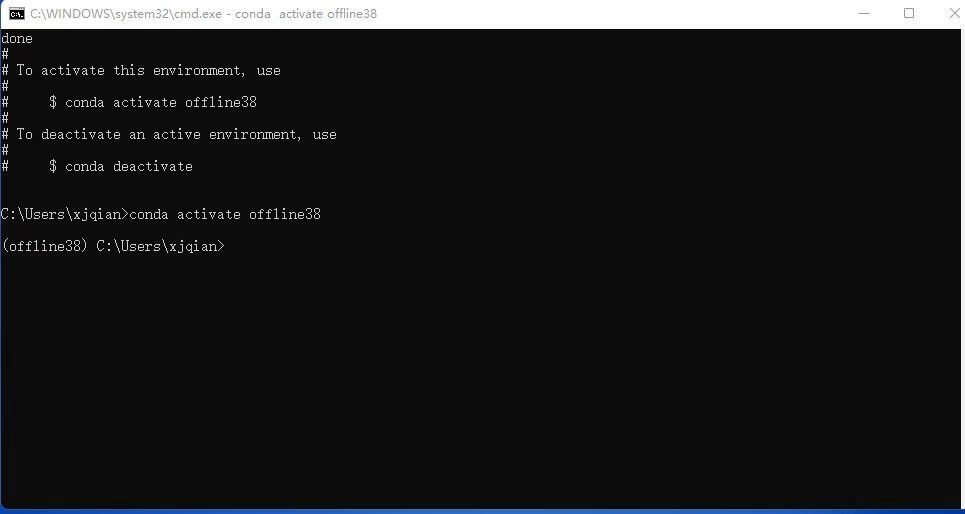
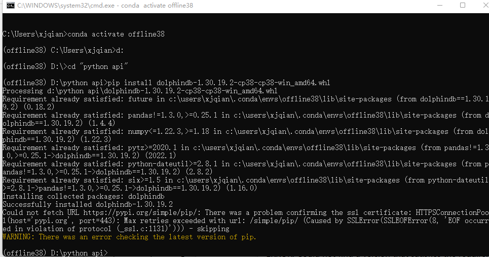
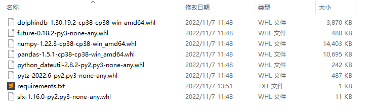

离线安装 Python API
出于安全考虑，通常生产环境与互联网隔离，因此无法使用 pip install 在线安装 DolphinDB Python API（以下简称 Python API）。本文介绍如何离线安装 Python API 环境，包括 conda 环境和 wheel 安装两种方式。用户可根据生产环境的使用需求、应用场景自行选择。
环境准备
首先准备构建环境，包括在线环境与离线环境，其中在线环境用于在线收集和构建资源，离线环境用于离线安装与验证。
构建环境需要与目标环境尽可能的一致，包括操作系统版本、CPU 架构、Python 版本等。其中在线环境用于下载并构建各种资源，离线环境用于构建与测试 Python API 的安装包。
Linux 环境准备
推荐使用类似 virtual box 的虚拟化工具来制作环境。假设我们需要在 KyLin v10，x86-64, Python 3.8 的目标环境中安装 Python API，那么需要准备以下环境：
在线环境
操作系统：KyLin v10
CPU：Intel(R) Core(TM) i7-10700 CPU @ 2.90GHz
主机平台：VirtualBox 6.1
网络：NetWork Bridge
离线环境
操作系统：KyLin v10
CPU：Intel(R) Core(TM) i7-10700 CPU @ 2.90GHz
主机平台：VirtualBox 6.1
网络：HostOnly
其中 HostOnly（仅主机模式）的网络模式可以保证该机器与互联网无法连接。
Windows 环境准备
Windows 环境可以准备两台机器（可以是 PC），一台用于在线获取资源，并禁用另一台机器的网络进行离线安装测试。有关 Windows 下安装和配置 Conda 环境，详见Windows 安装。
Linux conda 安装
安装 miniconda
推荐使用 miniconda，通常生产环境比较复杂，需要虚拟环境以保证隔离性。
Miniconda — conda documentation
wget https://repo.anaconda.com/miniconda/Miniconda3-latest-Linux-x86_64.sh sh Miniconda3-latest-Linux-x86_64.sh
安装并激活 base 虚拟环境。
source ~/.bashrc
使用 conda env list 验证安装已完成：
配置 miniconda
分别配置在线、离线环境的 conda：
conda 环境配置
conda config // 在 ~/目录下会出现文件 .condarc conda config // 在 ~/目录下会出现文件 .condarc
编辑
~/.condarc文件show_channel_urls: true envs_dirs: - ~/envs pkgs_dirs: - ~/pkgs
在线环境下载包
运行以下命令下载 package
conda create -n test38 numpy=1.22.3 pandas python=3.8.13 --download-only
要求 numpy 为1.18到1.22.3之间的版本, 推荐使用1.22.3版本。
压缩并上传 package
压缩
.condarc pkgs_dirs路径下的依赖包，并上传至离线环境的 pkgs 目录。tar -zcvf pkgs.tar.gz pkgs/ md5sum pkgs.tar.gz > pkgs.tar.gz.md5
离线安装 conda 环境
上传至离线环境后，需检查下完整性：
(base) root@peter-VirtualBox:~# md5sum -c pkgs.tar.gz.md5 pkgs.tar.gz: 成功校验完整性通过后，再解压：
tar -zxvf pkgs.tar.gz
创建虚拟环境：
conda create -n offline38 numpy pandas python=3.8.13 --offline conda activate offline38
安装 DolphinDB Python API
- 下载 whl 包
根据 CPU 架构、操作系统，从官方网站 pypi.org 下载对应的 Python API 安装包。
对应 x86_64, Python3.8 的包：
pip 离线安装
pip install dolphindb-1.30.19.2-cp38-cp38-manylinux2010_x86_64.whl
验证安装是否成功
(offline38) root@peter-VirtualBox:~# python Python 3.8.13 (default, Mar 28 2022, 11:38:47) [GCC 7.5.0] :: Anaconda, Inc. on linux Type "help", "copyright", "credits" or "license" for more information. import dolphindb as ddb s = ddb.session() s <dolphindb.session.session object at 0x7fa5d6534280>
能正常生成 session 就说明已安装成功安装 Python API。
Linux wheel 安装
在线环境收集 wheel 包
使用 pip wheel 命令收集相关 whl 包：
pip install wheel && pip wheel dolphindb
执行完成后，默认会在当前目录保存相关 whl 包。
(py38) [root@node1 ~]# ls *.whl|sort dolphindb-1.30.19.2-cp38-cp38-manylinux2010_x86_64.whl future-0.18.2-py3-none-any.whl numpy-1.22.3-cp38-cp38-manylinux_2_17_x86_64.manylinux2014_x86_64.whl pandas-1.5.0-cp38-cp38-manylinux_2_17_x86_64.manylinux2014_x86_64.whl python_dateutil-2.8.2-py2.py3-none-any.whl pytz-2022.2.1-py2.py3-none-any.whl six-1.16.0-py2.py3-none-any.whl
离线环境安装 wheel 包
pip install *.whl
(py38) root@peter-VirtualBox:~/wpkgs# pip install *.whl Processing ./dolphindb-1.30.19.2-cp38-cp38-manylinux2010_x86_64.whl Processing ./future-0.18.2-py3-none-any.whl Processing ./numpy-1.22.3-cp38-cp38-manylinux_2_17_x86_64.manylinux2014_x86_64.whl Processing ./pandas-1.5.0-cp38-cp38-manylinux_2_17_x86_64.manylinux2014_x86_64.whl Processing ./python_dateutil-2.8.2-py2.py3-none-any.whl Processing ./pytz-2022.2.1-py2.py3-none-any.whl Processing ./six-1.16.0-py2.py3-none-any.whl Installing collected packages: pytz, six, numpy, future, python-dateutil, pandas, dolphindb Successfully installed dolphindb-1.30.19.2 future-0.18.2 numpy-1.22.3 pandas-1.5.0 python-dateutil-2.8.2 pytz-2022.2.1 six-1.16.0
安装后验证
分别验证一下 whl 包和 Python API。
- pip list
(py38) root@peter-VirtualBox:~/wpkgs# pip list Package Version --------------- --------- certifi 2022.9.14 dolphindb 1.30.19.2 future 0.18.2 numpy 1.22.3 pandas 1.5.0 pip 22.1.2 python-dateutil 2.8.2 pytz 2022.2.1 setuptools 63.4.1 six 1.16.0 wheel 0.37.1
- Python API
(offline38) root@peter-VirtualBox:~# python Python 3.8.13 (default, Mar 28 2022, 11:38:47) [GCC 7.5.0] :: Anaconda, Inc. on linux Type "help", "copyright", "credits" or "license" for more information. import dolphindb as ddb s = ddb.session() s <dolphindb.session.session object at 0x7fa5d6534280>
能正常生成 session 就说明安装成功。
Windows conda 安装
分别在离线环境、在线环境安装并配置好 miniconda 环境。并通过在线环境构建
- dolphindb 依赖包
- dolphindb wheel 包
并上传至离线环境，来完成安装。
注：miniconda 的安装和配置分别在在线环境和离线环境完成，且目录名称须一致。
安装 miniconda
选择对应 Python 版本的 minicoda，下载 Miniconda3 Windows 64-bit 并安装。安装完成后，将 conda 加入 Windows 命令搜索路径：
此电脑 → 属性 → 查找设置 → 输入： 编辑系统环境变量 → 环境变量 → 系统环境变量
在新建中输入 condabin 目录的完整路径，如：
D:\ProgramData\Miniconda3\condabin
点击确定，新开 cmd 窗口验证
C:\Users\wfhuang>conda -V conda 4.12.0
配置 miniconda
设置包路径，如 D：\pkgs
D:\pythonApi>conda config --add pkgs_dirs D:\pkgs
在线环境下载包
在在线环境中配置好包路径，并下载 DolphinDB 相关依赖包
conda create -n test38 numpy=1.22.3 future pandas python=3.8.13 --download-only
在设置的 pkgs_dirs 中，会有存放相关依赖包。压缩后，包大小约为450MB
离线安装 conda 环境
- 将pkgs压缩包上传至离线环境，比较包的所占字节数，验证包是否完整。
- 校验完整性通过后，再解压至 pkgs 目录、创建虚拟环境：
conda create -n offline38 numpy pandas future python=3.8.13 --offline conda activate offline38
安装 Python API
- 下载 whl 包
根据 CPU 架构、操作系统，从官方网站 DolphinDB 下载对应的 Python API 安装包。
对应 Windows, x86_64, Python3.8 的 dolphindb 安装包
- pip 离线安装
pip install dolphindb-1.30.19.2-cp38-cp38-win_amd64.whl
- 验证安装是否成功
import dolphindb as ddb s = ddb.session() s.connect("192.168.1.157", 8848, "admin", "123456") s.run("print(\"Welcome to DolphinDB!\")") s.close()
D:\pythonApi>python hello_ddb.py Welcome to DolphinDB!
输出欢迎信息说明安装已经成功。
Windows wheel 安装
配置一个与目标环境相同的构建环境。例如目标环境是 x86-64, Windows server 2016, Python 3.8.10，那么可以准备一个 x86-64, Windows 10, Python 3.8.10 的 PC 环境。
在线环境收集 wheel 包
收集 Python API 的 wheel 包，并生成清单文件 requirements.txt。
- pip wheel
使用 wheel 在当前环境构建相关 whl 包，并解决相关依赖。
pip wheel dolphindb -i https://pypi.tuna.tsinghua.edu.cn/simple
使用 -i 可以指定镜像源加速构建，例如中国地区可以选择清华源。执行完成后，默认会在当前目录保存相关 whl 包。
- pip install
安装 Python API，用于生成依赖清单文件 requirements.txt。
pip install dolphindb -i https://pypi.tuna.tsinghua.edu.cn/simple
- pip freeze
使用 freeze 解析 Python API 的依赖，并输出至文件 requirements.txt。
pip freeze dolphindb > requirements.txt
上述步骤完成后，目录类似如下（不同版本会有差异）。
离线环境安装 wheel 包
将相关 whl 包、requirements.txt 上传至 Python 离线环境，并通过 pip install 安装，
使用 -r 选项从指定的清单文件 requirements.txt 中批量安装 wheel 包。
pip install -r requirements.txt
D:\pythonApi>pip install -r requirements.txt Processing d:\pythonapi\dolphindb-1.30.19.2-cp38-cp38-win_amd64.whl Processing d:\pythonapi\numpy-1.22.3-cp38-cp38-win_amd64.whl Processing d:\pythonapi\pandas-1.5.1-cp38-cp38-win_amd64.whl Processing d:\pythonapi\python_dateutil-2.8.2-py2.py3-none-any.whl Processing d:\pythonapi\pytz-2022.6-py2.py3-none-any.whl Processing d:\pythonapi\six-1.16.0-py2.py3-none-any.whl Collecting future==0.18.2 Using cached future-0.18.2-py3-none-any.whl Installing collected packages: six, pytz, python-dateutil, numpy, pandas, future, dolphindb Successfully installed dolphindb-1.30.19.2 future-0.18.2 numpy-1.22.3 pandas-1.5.1 python-dateutil-2.8.2 pytz-2022.6 six-1.16.0
安装后验证
分别验证下 whl 包和 Python API 。
- pip list
C:\pythonApi>pip list Package Version --------------- --------- dolphindb 1.30.19.2 future 0.18.2 numpy 1.22.3 pandas 1.5.1 pip 21.1.1 python-dateutil 2.8.2 pytz 2022.6 setuptools 56.0.0 six 1.16.0
- 验证安装是否成功
import dolphindb as ddb s = ddb.session() s.connect("192.168.1.157", 8848, "admin", "123456") s.run("print(\"Welcome to DolphinDB!\")") s.close()
D:\pythonApi>python hello_ddb.py Welcome to DolphinDB!
输出欢迎信息说明安装已经成功。
总结
总体而言，wheel 包安装比较简单快捷，而 conda 安装相对复杂，但是可以构建一个隔离环境。
| 安装方式 | 优点 | 不足 |
|---|---|---|
| conda | 提供虚拟环境 | 整个安装包大概在500M左右，上传至生产环境比较耗时，且需要校验完整性 |
| wheel | 简单快捷，安装包小 | 无法提供虚拟环境，可能与现有的 Python 环境相冲突 |
附录
pip 常用命令
pip list // 列出当前安装的包 pip freeze packageA // 列出 packageA 的依赖信息 pip wheel packageA // 构建 packageA 的依赖 wheel 包 pip search packageA // 在官方仓库 PyPI 搜索 packageA
conda 常用命令
- 离线创建虚拟环境
conda create -n py38 python=3.8.13 --offline
- 激活/关闭虚拟环境
conda env list //查看所有虚拟环境 conda activate py38 //激活 py38 conda deactivate //退出当前虚拟环境
- 清理并删除 conda 环境：
conda deactivate conda remove -n offline38 --all
常见问题处理
Q: conda 离线安装缺失包
PackagesNotFoundError: The following packages are not available from current channels: - pandas - python=3.8.13 - numpy
A: 检查下 pkgs_dirs 是否设置正确，以及在该目录下是否有提示信息中的包。不能有任何中间目录，例如设置 conda 的包目录为 pkgs，那么 pkgs/pkgs/numpy 是无法被 conda 找到的。
Q: wheel 包未安装
error: invalid command 'bdist_wheel'A: 使用 pip 安装 wheel
pip install wheel
Q: future 包缺失
ERROR: Could not find a version that satisfies the requirement future (from dolphindb) (from versions: none) ERROR: No matching distribution found for future
A: 可以手动收集下 future 包，并上传至离线环境。
pip wheel future
Q: 构建 future whl 包失败
Failed to build future
ERROR: Failed to build one or more wheels
WARNING: Ignoring invalid distribution -ip (d:\program files\python3.7\lib\site-packages)A: 因 pip 下载、安装未成功而导致的环境异常，进入 pip --version 输出信息中的 site-packages/pip 目录，删除~开头的一些临时文件。
(base) [root@node1 ~]# pip --version pip 21.2.4 from /root/miniconda3/lib/python3.9/site-packages/pip (python 3.9)
Q: Python API 安装失败
ERROR: Could not find a version that satisfies the requirement dolphindb (from versions: none)
A: 安装环境与 whl 包不匹配导致。可以按如下步骤处理：
通过 PyPI 确认是否存在支持当前操作系统（例如 Linux ARM 架构、Mac M1等）的 DolphinDB API 安装包。若存在，则将该 whl 包下载至本地。
通过如下命令查看适合当前系统环境支持的 whl 包后缀。
pip debug --verbose
根据 Compatible tags 的显示信息，将 DolphinDB 的 whl 包名修改为适合系统架构的名称。以 Mac(x86_64) 系统为例：安装包名为“dolphindb-1.30.19.2-cp37-cp37m-macosx_10_16_x86_64.whl”。但查询到 pip 支持的当前系统版本为10.13，则使用“10_13”替换 whl 包名中的“10_16”。
尝试安装更名后的 whl 包。
若执行完上述操作后，仍无法安装或导入，可在 DolphinDB 社区 中进行反馈。